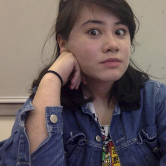

a self-guided q & a
-
Who are you and what do you do?
I'm Marcie. I'm 22, and I work in New York as a freelance animator and illustrator. I also make games and websites (infrequently and not very well). Sometimes I like to write and do photography.
-
What do you want to do?
I want to make short films and tell stories. And, like, get paid for it, too.
-
What’s your background?
I graduated in December 2016 with a BFA from the Minneapolis College of Art and Design. I studied animation for two and a half years. Prior to that, I studied psychology at UCLA for 2 years. I moved to the east coast a few months after graduating. I grew up in a suburb of Minneapolis, but I was born in Vancouver, Canada. My mom is Chinese and my dad is French Canadian. I also have a brother. He's the only person who likes my tweets.
-
What themes do you pursue?
I prefer forming a story prior to expressing a theme. But things that tend to pop up over and over again: humor, bright colors, existential anxiety, fun/obscure music, relationships.
-
Where do you want to be in 4 years?
Gainfully employed, living in New York City, with a few short films under my belt, not dead.
-
What/who are your favorite movies/books/artists?
Movies:
- Raise the Red Lantern
- My Own Private Idaho
- Pan's Labyrinth
- It's Such A Beautiful Day
- Pulp Fiction
- To Live
- Spirited Away
- Mommy
- American Beauty
- Au Revoir Les Enfants
- Fanny and Alexander
- Fiddler on the Roof
- Harold and Maud
- Monty Python and the Holy Grail
- Fantasia
- Risky Business
- Napoleon Dynamite
- Shrek 2
- There Will Be Blood
Books:
- Lolita
- Ada, or Ardor
- Brief Interviews with Hideous Men
- Syllabus
- Everything is Illuminated
- Watchmen
- Duino Elegies
- The Waves
- Blankets
- Labyrinths
- A Good Man is Hard to Find
- Norwegian Wood
Games:
- Kentucky Route Zero
- Knights of the Old Republic 1 and 2
- Dear Esther
- A House in California
- Sacrilege
Animators:
- Sean Pecknold
- Don Hertzfeldt
- Kristen Lepore
- David O'Reilly
- Nate Milton
- Eran Hilleli
- Oskar Fischinger
- Lotte Reiniger
- Adam Elliot
- Amanda Forbis and Wendy Tilby
- Julia Pott
- Caleb Wood
- Caroline Leaf
- Sean Buckelew
- Shishi Yamazaki
- Tom Schroeder
Old/deceased artists:
- Van Gogh
- Vivian Maier
- William Eggleston
- Hieronymous Bosch
- Egon Schiele
- John Baldessari
- Gustave Klimt
- Oskar Kokoschka
- Picasso
- Illuminated manuscripts
- Prehistoric cave paintings
Music:
- far too many to list for a lifetime, but current music I've been enjoying:
- Hamilton
- tomppabeats
- Father John Misty
- Jean Jacques-Perrey
- the Kentucky Route Zero soundtrack
- Kalbells
- Mendelssohn
-
What’s the best piece of advice you’ve been given?
Trust your instincts.
-
When you're not doing what you're usually doing, what do you do?
I watch a lot of TV, movies, and short films. Podcasts are my entertainment bread and butter. I like reading graphic novels and regular novels (but a little bit less, since I have a short attention span). I also like to cook and eat. Sometimes I play music (piano, melodica, ukulele). Most of my time is spent on the Internet, and I like watching YouTube videos and reading articles/essays. I don't do sports. Too much sweat.
-
Why did you write all this??
Someone (a professional adult) told me they'd like to see an extended bio, so it's not pure narcissism, I promise! (But I will admit this was pretty fun to write.)
-
What do you look like?
